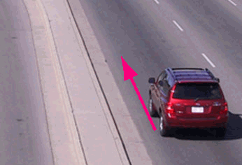

The magenta arrow represents the car's velocity
Velocity is a vector quantity, i.e., it has magnitude and direction. A car's velocity might be '80 km/h going north'. 80 km/h is the magnitude of the car's velocity, also called speed. Going north describes the direction of the car's velocity. Both of these pieces of information are necessary to specify the car's velocity. If one only says that the car is going at 80 km/h, one is specifying the car's speed, not its velocity.
By the way, professional physicists often don't choose their words carefully and say 'velocity' when they really mean 'speed'. Here we will carefully distinguish between the two concepts, and you should do so too while still learning about vectors.
On Page 2, a simulation will let you observe how the velocity of a car relates to the car's motion. You will be able to control the car by controlling its velocity.